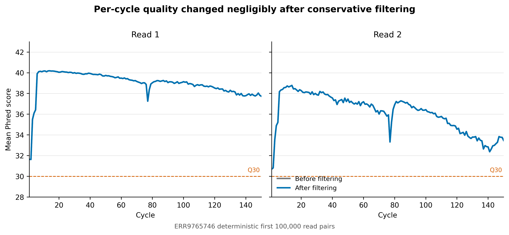
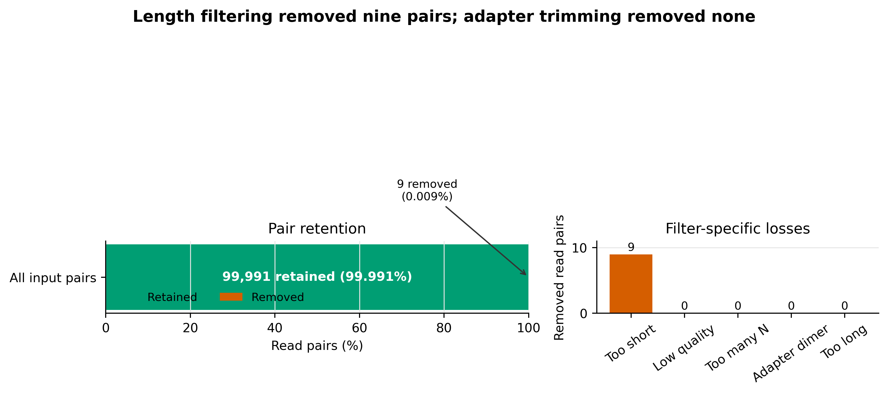
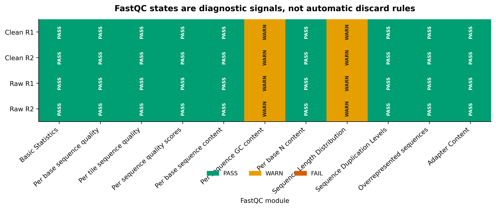

options(timeout = 600)
base_url <- "https://raw.githubusercontent.com/petemeng/metagenomics-best-practices/e219a2cd01609cc208a89e291cbd363ed7f2fbd8/"
files <- read.delim(paste0(base_url, "examples/13/files.tsv"))
for (i in seq_len(nrow(files))) {
path <- files$path[i]
dir.create(dirname(path), recursive = TRUE, showWarnings = FALSE)
if (!file.exists(path)) {
download.file(paste0(base_url, files$source[i]), path, mode = "wb")
}
}读长质控与修剪：FastQC、MultiQC 与 fastp
学习目标：把 FastQC、fastp 与 MultiQC 放回各自正确的位置；先检查原始成对 FASTQ，再用显式、保守的规则过滤，核对 reads 与 read pairs 两套账本，复查 clean FASTQ，并判断 WARN 是技术异常、样本生物学，还是通用模型与宏基因组不匹配。
真实数据：Meslier 等构建的 71-strain MOCK1 DNA，ENA projectPRJEB52977、sampleSAMEA14435832、Illumina HiSeq 3000 paired-end runERR9765746(Meslier 等 2022年)。本文确定性使用官方 R1/R2 文件各自最前面的 100,000 条完整记录；它是可核验的文件前缀，不是随机抽样，也不代表全量 run。
预计资源：建议 4 核、4 GB RAM、2 GB scratch；本文实际运行中 fastp 用时 1 分 17.91 秒、峰值 1,580,964 KB，四份 FastQC 合计低于 9 秒，MultiQC 用时 2.37 秒。全量 FASTQ 的官方压缩体积约 1.62 GiB（R1）与 1.96 GiB（R2），应在 HPC/scratch 或云盘处理；没有服务器时可先运行本文 100,000-pair 前缀。
提示先确定这一点
先看原始质量再选择修剪规则；成对 reads 的损失需要逐项解释，WARN 不能直接当成失败。
质控要保留可信读段，而不是把报告变成全绿
Meslier 等用同一组复杂 mock DNA 比较七种测序平台。Figure 1 展示 mock 中跨 29 个 phyla、GC 含量约 27%–69% 的基因组背景，Table 1 给出平台与读长，后续 Figure 2、Figure 3 比较测序深度与物种丰度偏差 (Meslier 等 2022年)。这些比较成立的前提，是每个平台的 reads 先经过可解释的质量处理。
原论文的 Illumina/MGI short-read QC 使用 fastp 0.20.0；Illumina 提供 TruSeq adapters，过滤后最短长度为 45 nt，含一个 N 的 reads 和失去配对的 reads 被移除。本文使用同一公开 Illumina run，但目标不是伪装成对原论文统计图的逐像素复现，而是把论文图之前容易被压缩成一句 Methods 的步骤展开成三张可审计证据图：
- 每个 cycle 的质量在过滤前后是否真正改变；
- 100,000 个 read pairs 到底保留、损失了多少，损失由哪条规则造成；
- raw/clean × R1/R2 的 FastQC module 状态是否一致，WARN 是否有生物学解释。
下载本例数据与分析代码
数据与代码清单列出了本例的输入表、分析脚本和环境文件（约 4.1 MiB）。本清单不含原始 FASTQ 或大型数据库；是否需要它们取决于下文的分析起点。清单中的已计算结果仅供核对；读取结果表不等于重新运行统计模型或上游工具。
在新建文件夹中运行下面的 R 代码，下载完成后即可按正文中的相对路径读取文件。需要核验文件版本时，可使用带完整性检查的下载脚本。
保守过滤没有“制造”质量改善

R1、R2 各 cycle 的 raw 与 clean 曲线几乎重合。fastp 没有为追求更漂亮的曲线启用 5′/3′ sliding-window trimming；只有极少数天然短 reads 触发长度门槛。图没有明显变好，恰恰说明输入本来就好。
损失集中在一条可解释规则

fastp JSON 以 reads 计数：输入 200,000 reads，保留 199,982 reads，too_short = 18。只有在确认输出仍为同步 paired-end、所有分类计数均为偶数且 reads 账本守恒后，才能除以二写成 100,000、99,991 和 9 个 read pairs。
重要零条 adapter-trimmed reads 是有效结果
--detect_adapter_for_pe 已实际运行；fastp 报告 adapter_trimmed_reads = 0。这表示该前缀中没有达到工具证据门槛的 adapter overlap，不表示漏跑了接头检查。硬写 adapter 序列或加大修剪强度，不能把“零”变成更可信的结果。
WARN 不等于失败

四份 FastQC 报告合计 36 PASS、8 WARN、0 FAIL。每份报告的两个 WARN 都没有在过滤后消失：
- Per sequence GC content：FastQC 的通用期望更接近单一基因组或形状简单的文库；71 个基因组组成的 mock 本来就可能形成复杂 GC 分布。
- Sequence Length Distribution：原始前缀的 read length 为 47–150 bp，clean 为 50–150 bp；变长不是文件损坏，而是文库与处理结果的真实结构。
如果 WARN 来自污染或接头残留，通常还应看到 overrepresented sequences、adapter content、taxonomic control 或 blank 中的相互支持证据。这里只有孤立颜色，不足以推出污染。
先锁定输入、版本和算力边界
环境配置与完整运行说明
算力门槛
| Task | CPU | RAM | Scratch | Observed wall time on 100k pairs |
|---|---|---|---|---|
| Stream deterministic prefix | 1 | <1 GB | 20 MB | network-dependent |
| FastQC raw pair | 2 | 0.40 GiB peak | 20 MB + reports | 4.39 s |
| fastp paired filtering | 4 | 1.51 GiB peak | 40 MB | 1 min 17.91 s |
| FastQC clean pair | 2 | 0.41 GiB peak | reports only | 4.42 s |
| MultiQC aggregation | up to 4 | 0.22 GiB peak | <10 MB | 2.37 s |
这些是本机实测值，不是全量 FASTQ 的线性预算。全量数据应先用一个代表性样本在目标 scratch 上 benchmark；同时跑多个样本时，内存和 I/O 会按并发数叠加。
没有服务器时，先用本文前缀完成参数和报告结构验收。真正分析队列时，把 raw/clean FASTQ 放到不参与 Git 同步的 scratch；只把 manifest、参数、报告、审计表与最终 figures 带回项目目录。
建立版本锁定环境
完整环境定义为 env/read-qc.yml，Linux-64 transaction 固定在 env/read-qc-linux-64.lock：
mamba env create --file env/read-qc.yml
export READ_QC_ENV_PREFIX="${HOME}/miniconda3/envs/metagenome-read-qc-2026.07"
"${READ_QC_ENV_PREFIX}/bin/fastqc" --version
"${READ_QC_ENV_PREFIX}/bin/fastp" --version
"${READ_QC_ENV_PREFIX}/bin/multiqc" --version
"${READ_QC_ENV_PREFIX}/bin/python" --version
sha256sum env/read-qc.yml env/read-qc-linux-64.lock应得到：
FastQC v0.12.1
fastp 1.3.6
multiqc, version 1.35
Python 3.14.6环境文件与 explicit lock 的 SHA-256 分别是：
3d94a0e5e8a8b1ba2bf58de1d1c15be06824ae7163965559fce48ce632e94759 env/read-qc.yml
19bd7992dd9480fbd0fea34fda676da866c3775648a693fc6822636da64f2368 env/read-qc-linux-64.lock如果要逐字节恢复 Linux-64 transaction，可使用：
mamba create \
--name metagenome-read-qc-2026.07 \
--file env/read-qc-linux-64.lock核对公开数据身份
data/small/13-source-manifest.tsv 的每一行是一端 FASTQ：
column -t -s $'\t' data/small/13-source-manifest.tsv | less -S
sha256sum data/small/13-source-manifest.tsv关键字段：
| Field | Locked value |
|---|---|
| Study | PRJEB52977 |
| Sample | SAMEA14435832 |
| Run | ERR9765746 |
| Layout | paired |
| Instrument | Illumina HiSeq 3000 |
| Read geometry | 2 × 150 bp nominal |
| Selection | first 100,000 complete records per mate |
| Source manifest SHA-256 | e0556ff…8042a |
完整 ENA archive 的 MD5 与 byte count 是远端身份信息。streaming prefix 没有下载完整文件，不能声称重新验证了完整 MD5。本文另为所用 prefix 计算未压缩 FASTQ SHA-256 和确定性 gzip SHA-256。
内联 R 作图环境与函数
网页直接使用已经审计的三格式图；若要把自己的 QC 汇总表画成同款图，可安装：
install.packages(
c("ggplot2", "dplyr", "tidyr", "readr", "scales", "ragg")
)并在当前脚本内定义：
library(ggplot2)
library(dplyr)
library(tidyr)
library(readr)
set.seed(20260720)
pal_pub <- c(
"Raw" = "#7A7A7A",
"Clean" = "#0072B2",
"PASS" = "#009E73",
"WARN" = "#E69F00",
"FAIL" = "#D55E00",
"Removed" = "#D55E00"
)
scale_color_pub <- function(...) {
scale_color_manual(values = pal_pub, ...)
}
scale_fill_pub <- function(...) {
scale_fill_manual(values = pal_pub, ...)
}
theme_pub <- function(base_size = 12) {
theme_classic(base_size = base_size) +
theme(
plot.title = element_text(face = "bold", hjust = 0),
plot.subtitle = element_text(color = "#555555"),
axis.title = element_text(face = "bold"),
legend.position = "bottom",
legend.title = element_blank(),
strip.background = element_blank(),
strip.text = element_text(face = "bold"),
plot.margin = margin(8, 12, 8, 8)
)
}
save_pub <- function(
plot,
stem,
width = 9,
height = 5.5,
dpi = 350
) {
dir.create("figures", recursive = TRUE, showWarnings = FALSE)
ggsave(
file.path("figures", paste0(stem, ".pdf")),
plot, width = width, height = height,
device = cairo_pdf
)
ggsave(
file.path("figures", paste0(stem, ".png")),
plot, width = width, height = height,
dpi = dpi, bg = "white"
)
ggsave(
file.path("figures", paste0(stem, ".tiff")),
plot, width = width, height = height,
dpi = dpi, compression = "lzw", bg = "white"
)
}一次性建立同步 FASTQ 前缀
三个工具回答三个不同问题
| Tool | 输入 | 核心问题 | 会不会改 FASTQ |
|---|---|---|---|
| FastQC | 单个 FASTQ | 这个文件的质量、组成、长度、重复和接头信号长什么样？ | No |
| fastp | paired/single FASTQ | 哪些 reads 触发了明确过滤或修剪规则？ | Yes |
| MultiQC | 多个工具的 reports/logs | 多文件、多样本结果能否放在同一界面比较？ | No |
MultiQC (Ewels 等 2016年) 是汇总器，不会重新分析 FASTQ，也不会替 FastQC 或 fastp 判断一个 WARN 是否可接受。FastQC 是文件级诊断，不负责保持 pair 同步。fastp (Chen 等 2018年) 才是本文实际写出 clean FASTQ 的工具。
Phred 分数是错误概率的对数
Phred quality score 定义为：
\[ Q = -10 \log_{10}(P_{\mathrm{error}}) \]
因此：
| Q score | Estimated base-call error probability | Expected errors per base |
|---|---|---|
| Q20 | \(10^{-2}\) | 1 in 100 |
| Q30 | \(10^{-3}\) | 1 in 1,000 |
| Q40 | \(10^{-4}\) | 1 in 10,000 |
--qualified_quality_phred 20 并不是“保留所有 Q20 bases”。它把 Q20 设为合格 base 的边界，再由 --unqualified_percent_limit 40 判断一条 read 中不合格 bases 的比例是否过高。两个参数必须一起报告。
原始数据只写入 ignored scratch：
set -euo pipefail
export READ_QC_ENV_PREFIX="${HOME}/miniconda3/envs/metagenome-read-qc-2026.07"
export RAW_DIR="${SCRATCH:-$PWD/data/raw}/article13"
mkdir -p "${RAW_DIR}"
"${READ_QC_ENV_PREFIX}/bin/python" \
scripts/build_article13_fastq_subset.py \
--manifest data/small/13-source-manifest.tsv \
--output-dir "${RAW_DIR}"
sed -n '1,220p' "${RAW_DIR}/subset-summary.json"builder 会逐条检查：
- FASTQ header 以
@开头、separator 以+开头； - sequence 与 quality 长度一致；
- bases 只含
A/C/G/T/N； - quality 与 Phred+33 范围兼容；
- 每端恰有 100,000 条完整记录且 normalized ID 不重复；
- R1/R2 normalized ID 与顺序逐条相同。
本文原始 prefix 的证据为：
Pairs: 100000
First ID: ERR9765746.1
Last ID: ERR9765746.100000
R1 length: 47–150 bp
R2 length: 47–150 bp
Paired-ID SHA-256:
050dd3a5426c09ecc024adc9a0e89f8852cca005fb24cec625bb1810f52d3b63
注意坑 6：把 100,000-pair prefix 当随机抽样
固定文件前缀用于回归验收很强，用于估计总体比例很弱。全量决策必须重跑每个样本，并检查 lane/tile 与批次结构。
先跑 raw FastQC
duplication 是信号，不是自动去重指令
fastp 报告的 duplication rate 为 1.513%，本文只记录，没有使用 --dedup。在 shotgun metagenome 中，相同 reads 可能来自：
- PCR duplicates；
- 高丰度基因组的真实重复抽样；
- 多拷贝 rRNA、mobile elements 或保守基因；
- 多个近缘基因组共享的序列。
没有 UMI 或定位信息时，sequence-level deduplication 很难区分这些来源。直接删重复 reads 会优先改变高丰度 taxa 和高拷贝功能的计数结构。若文库是 PCR-free，更不应仅凭 FastQC duplication WARN 就去重。
FastQC 的参考模型未必适合复杂群落
FastQC 的 module 状态是规则化诊断。宏基因组中的多峰 GC、不同 organism 的起始 motif、真实高丰度序列和多样 read length 都可能触发 WARN。解释时应把多个证据层合在一起：
FastQC signal
├── instrument / library expectation
├── adapter and overrepresented-sequence identity
├── negative and positive controls
├── host / taxonomic classification
└── downstream mapping or assembly impact单独一个 module 的颜色只能提出问题，不能替代答案。
文件前缀可复现，但不是随机代表样本
本文固定“官方 checksum-identified 文件的前 100,000 个完整 records”，优点是任何人能复核相同字节和相同结果；局限是 Illumina FASTQ 的顺序可能保留 lane/tile 等技术结构。它适合教学、软件验收和回归测试，不适合估计全量 run 的失败率置信区间。
全量项目至少应：
- 每个 sample 运行 raw 与 clean QC；
- 比较样本间的 retention、Q30、length 和 duplication；
- 按 lane、batch、body site 和 extraction batch 检查异常；
- 对关键过滤参数做代表性样本敏感性分析；
- 把排除样本的规则写在看结果之前。
set -euo pipefail
RAW_R1="${RAW_DIR}/ERR9765746_prefix100k_R1.fastq.gz"
RAW_R2="${RAW_DIR}/ERR9765746_prefix100k_R2.fastq.gz"
FROZEN_DIR="data/small/13-qc-frozen"
mkdir -p \
"${FROZEN_DIR}/raw_fastqc" \
"${FROZEN_DIR}/logs"
/usr/bin/time -v \
-o "${FROZEN_DIR}/logs/fastqc-before.resources.txt" \
"${READ_QC_ENV_PREFIX}/bin/fastqc" \
--noextract \
--threads 2 \
--memory 512 \
--svg \
--outdir "${FROZEN_DIR}/raw_fastqc" \
"${RAW_R1}" "${RAW_R2}" \
> "${FROZEN_DIR}/logs/fastqc-before.log" 2>&1保留 .zip 很重要：HTML 方便人工浏览，zip 内的 fastqc_data.txt 与 summary.txt 才是可机器审计的 module-level 结果。
unzip -p \
"${FROZEN_DIR}/raw_fastqc/ERR9765746_prefix100k_R1_fastqc.zip" \
'*/summary.txt'
unzip -p \
"${FROZEN_DIR}/raw_fastqc/ERR9765746_prefix100k_R1_fastqc.zip" \
'*/fastqc_data.txt' |
sed -n '1,55p'FastQC 版本也要作为结果条件
不同 FastQC 版本可能改变 module、阈值或解析行为。本文四份报告都记录 FastQC 0.12.1，每份恰有 11 个 module states。不要在 Methods 只写“FastQC was used”，也不要拿不同版本的 PASS/WARN 数直接比较批次。
对真实队列增加样本级门槛
单个 mock prefix 只能验证工具链。真实项目还应产生一行一个 sample 的 QC table：
| Required field | 作用 |
|---|---|
| input/passed pairs | 发现低产出与异常损失 |
| Q20/Q30 before and after | 区分原始质量与处理影响 |
| length distribution | 保护短 read 信息边界 |
| adapter-trimmed reads/bases | 确认 adapter policy 是否实际工作 |
| duplication estimate | 识别文库复杂度异常，不自动去重 |
| overrepresented sequences | 连接 adapter/control/taxonomic 检查 |
| FastQC module states | 保留诊断上下文 |
| host fraction | 判断人体样本可用微生物 read budget |
| exclusion decision and reason | 防止看组间结果后删样本 |
排除阈值应结合样本类型与研究终点。低生物量样本、biopsy、saliva 和 stool 不应共享一个武断的 passed-pair 或 duplication 阈值。
注意坑 5：把 GC 或 duplication WARN 直接叫污染
复杂 mock 和真实群落会产生复杂 GC 与真实重复抽样。污染判断需要 blank、sequence identity、taxonomic classification 和 batch pattern 支持。
注意坑 8：只保存 HTML
HTML 方便看，却不适合作为唯一审计证据。至少同时保留 FastQC zip、fastp JSON、MultiQC data directory、命令、版本、resource logs 和 SHA-256 manifest。
用显式的 paired-end 规则运行 fastp
单端合格不等于成对数据合格
对 paired-end 数据，最低限度的账本是：
\[ N_{\mathrm{input\ reads}} = N_{\mathrm{passed\ reads}} + N_{\mathrm{low\ quality}} + N_{\mathrm{too\ many\ N}} + N_{\mathrm{too\ short}} + N_{\mathrm{too\ long}} \]
本文为：
\[ 200{,}000 =199{,}982+0+0+18+0 \]
但 read-level 等式还不够。还要确认：
- clean R1 与 clean R2 记录数相同；
- 每一行 normalized read ID 相同且顺序一致；
- 每个失败类别在当前 paired policy 下可成对解释；
- 下游程序拿到的仍是
--in1/--in2对应输出，而不是两个独立过滤文件。
本文 clean paired-ID 序列的 SHA-256 为：
457cef6e9d603790dfbc26b716b0498169b54c31bc903d067d449d8dcc86770d“末端下降”不自动等于“应该剪掉”
短 reads 的信息量、可唯一比对性和 assembly k-mer 支持都会随长度下降。盲目从两端修剪可能：
- 把原本仍高于 Q30 的 bases 删除；
- 增加小于最短长度阈值的 reads；
- 让 strain-level variants 和低丰度基因的覆盖继续下降；
- 造成不同测序批次因质量曲线不同而接受不同程度的信息损失。
更稳妥的顺序是：先查看 per-cycle distribution，再选择最少必要操作；若要改变 trimming policy，应在代表性样本上比较 retention、mapping、taxonomic profile 和 assembly outcome，而不是只比较 FastQC 颜色。
set -euo pipefail
CLEAN_R1="${RAW_DIR}/ERR9765746_clean_R1.fastq.gz"
CLEAN_R2="${RAW_DIR}/ERR9765746_clean_R2.fastq.gz"
mkdir -p "${FROZEN_DIR}/fastp"
/usr/bin/time -v \
-o "${FROZEN_DIR}/logs/fastp.resources.txt" \
"${READ_QC_ENV_PREFIX}/bin/fastp" \
--in1 "${RAW_R1}" \
--in2 "${RAW_R2}" \
--out1 "${CLEAN_R1}" \
--out2 "${CLEAN_R2}" \
--json "${FROZEN_DIR}/fastp/ERR9765746_fastp.json" \
--html "${FROZEN_DIR}/fastp/ERR9765746_fastp.html" \
--report_title "ERR9765746 first 100,000 pairs" \
--thread 4 \
--compression 6 \
--detect_adapter_for_pe \
--qualified_quality_phred 20 \
--unqualified_percent_limit 40 \
--n_base_limit 5 \
--length_required 50 \
--disable_trim_poly_g \
--overrepresentation_analysis \
--overrepresentation_sampling 20 \
--dont_overwrite \
> "${FROZEN_DIR}/logs/fastp.log" 2>&1这里有意没有启用：
--cut_front
--cut_tail
--cut_right
--correction
--dedup
--low_complexity_filterHiSeq 3000 使用四通道 chemistry，不属于 poly-G tail 最典型的二通道平台，因此明确 --disable_trim_poly_g，避免环境默认行为或跨平台配置漂移。若你的数据来自 NextSeq/NovaSeq 等平台，应根据实际 chemistry、报告中的 poly-G pattern 和 negative control 决定，而不是照搬这个选项。
先区分论文复现参数与当前处理参数
| Decision | Meslier et al. Illumina QC | 本文当前合同 | 为什么不同 |
|---|---|---|---|
| fastp version | 0.20.0 | 1.3.6 | 固定当前已验证 release，同时保留历史版本 |
| Adapter | supplied TruSeq adapter | paired overlap detection | 先让数据证明该 prefix 是否有 adapter signal |
| Minimum length | 45 nt | 50 bp | 当前下游最小信息量合同 |
| N threshold | any N discarded |
at most 5 N |
避免单个不确定 base 自动丢整对 |
| Pair policy | unpaired removed | paired outputs only | 两端同步与 ledger 进入机器断言 |
| Sliding trimming | not fully enumerated in paper | disabled | 不用隐藏默认值“修绿”报告 |
原论文参数回答“论文当时如何比较七个平台”；本文参数回答“当前软件下如何建立一条保守、显式、可审计的 short-read QC 基线”。如果要忠实重跑原论文，必须另建 fastp 0.20.0 环境并按原文提供 TruSeq adapter、45-nt 和 zero-N policy，不能把本文结果写成原参数重现。
参数敏感性应该看下游，不只看 QC 图
至少选择高质量、中位质量和低质量样本，比较：
Conservative policy
vs
More aggressive end trimming
├── retained paired reads
├── host-removal yield
├── mapping / classification rate
├── species profile distance
├── pathway profile distance
└── assembly N50 / mapped fraction若激进 trimming 只让 FastQC 更绿，却降低 paired retention、unique mapping 或 assembly recovery，就没有升级价值。
注意坑 3：R1、R2 分别截取或分别过滤
两个文件记录数相同不代表 ID 和顺序相同。应逐条规范化 read ID，再验证全序列一致。
注意坑 4：为了全绿启用所有 trimming
同时打开 front/tail/right cutting、correction、length filter 和 low-complexity filter，会让每一种信息损失难以归因。先设最小规则，再逐项做敏感性分析。
从 JSON 建立 reads 记录表，再解释成 pairs
先保留工具原始单位：
jq '{
fastp_version,
before: .summary.before_filtering,
after: .summary.after_filtering,
filtering_result,
adapter_cutting,
duplication: .duplication.rate,
insert_size_peak: .insert_size.peak
}' \
"${FROZEN_DIR}/fastp/ERR9765746_fastp.json"本文关键值：
| Metric | Tool unit | Observed |
|---|---|---|
| Input | reads | 200,000 |
| Passed | reads | 199,982 |
| Low quality | reads | 0 |
| Too many N | reads | 0 |
| Too short | reads | 18 |
| Too long | reads | 0 |
| Adapter trimmed | reads | 0 |
机器检查账本：
jq -e '
.summary.before_filtering.total_reads
==
(
.summary.after_filtering.total_reads
+ .filtering_result.low_quality_reads
+ .filtering_result.too_many_N_reads
+ .filtering_result.too_short_reads
+ .filtering_result.too_long_reads
)
' "${FROZEN_DIR}/fastp/ERR9765746_fastp.json"只有 clean R1/R2 同步检查也通过，才把偶数 read counts 除以二：
Input pairs: 100000
Retained pairs: 99991
Too-short pairs: 9
Retention: 99.991%
注意坑 2：把 reads 写成 read pairs
fastp JSON 默认报告 reads。paired-end 下不能未经同步和守恒检查就除以二，更不能把 too_short_reads = 18 写成损失 18 pairs。
对 clean FASTQ 再跑 FastQC
set -euo pipefail
mkdir -p "${FROZEN_DIR}/clean_fastqc"
/usr/bin/time -v \
-o "${FROZEN_DIR}/logs/fastqc-after.resources.txt" \
"${READ_QC_ENV_PREFIX}/bin/fastqc" \
--noextract \
--threads 2 \
--memory 512 \
--svg \
--outdir "${FROZEN_DIR}/clean_fastqc" \
"${CLEAN_R1}" "${CLEAN_R2}" \
> "${FROZEN_DIR}/logs/fastqc-after.log" 2>&1raw 与 clean 报告都要保留。只看 clean 会失去“这条规则究竟改变了什么”的反事实；只看 raw 则无法发现过滤器写空文件、破坏配对或引入意外长度分布。
用 MultiQC 汇总，但保留 before/after 身份
set -euo pipefail
mkdir -p "${FROZEN_DIR}/multiqc"
/usr/bin/time -v \
-o "${FROZEN_DIR}/logs/multiqc.resources.txt" \
"${READ_QC_ENV_PREFIX}/bin/multiqc" \
--force \
--no-version-check \
--module fastqc \
--module fastp \
--require-logs \
--dirs \
--dirs-depth 1 \
--fullnames \
--data-dir \
--data-format json \
--title "ERR9765746 read QC: raw versus clean" \
--filename "13-multiqc-report.html" \
--outdir "${FROZEN_DIR}/multiqc" \
"${FROZEN_DIR}/raw_fastqc" \
"${FROZEN_DIR}/clean_fastqc" \
"${FROZEN_DIR}/fastp" \
> "${FROZEN_DIR}/logs/multiqc.log" 2>&1--dirs --dirs-depth 1 --fullnames 让 sample 名带上 raw_fastqc 或 clean_fastqc 前缀，避免同名 R1/R2 在聚合时覆盖。验收目标是四个 FastQC reports 与一个 fastp report：
FastQC: 4
fastp: 1
注意坑 1：只看 MultiQC 的颜色
MultiQC 把很多日志放在一页，但不会判断 WARN 的原因。必须回到 FastQC module、fastp JSON、control 与样本背景。
注意坑 7：before/after 同名导致 MultiQC 覆盖
目录前缀或明确 sample naming 必须保留。汇总后断言应看到四个唯一 FastQC samples，而不是两个。
一条命令执行完整的一次性流程
上面的步骤已封装为：
bash scripts/run_article13_read_qc.sh \
--project-root "$PWD" \
--environment-prefix "${READ_QC_ENV_PREFIX}" \
--raw-dir "${RAW_DIR}" \
--frozen-dir data/small/13-qc-frozen为避免悄悄混入两次运行的文件，脚本拒绝覆盖非空 frozen directory。需要重跑时，应创建新的版本化目录，验收通过后再明确替换旧 evidence bundle。
clean reads 还不是分析输入终点
本文只处理 sequence-quality、N、length 与 adapter evidence。人体来源 shotgun reads 还要进入宿主去除，并在 clean/non-host 层继续检查复杂度、重复和生物安全边界。不要把 passed_filter_reads 写成“microbial reads”；它仍可能包含 human、PhiX 或其他非目标序列。
日常离线验证保存产物
mkdir -p results/13-read-qc-fastp figures
"${READ_QC_ENV_PREFIX}/bin/python" \
scripts/validate_article13_read_qc.py \
--project-root "$PWD" \
--environment-prefix "${READ_QC_ENV_PREFIX}" \
--frozen-dir data/small/13-qc-frozen \
--output-dir results/13-read-qc-fastp \
--figure-dir figures该验证不访问 ENA，并检查：
data/small/13-qc-frozen/run-summary.json中的一次性运行结论；data/small/13-qc-frozen/file-checksums.sha256中的完整 frozen payload 身份；- 57 个 frozen payload 文件的 SHA-256；
- 工具版本、171-row explicit lock 与输入 manifest；
- fastp 参数存在/缺席、read ledger 与 clean pair 同步；
- 四个 FastQC zip、每份 11 个 modules 与 sequence counts；
- MultiQC 的 4 + 1 reports 和唯一 sample names；
- 三张图的 PDF、PNG 与 350 dpi LZW TIFF。
本次结果：
checks_passed: 74
checks_failed: 0
checksum_failures: 0
qa_network_access: false公开 frozen bundle 中的本机绝对路径会规范化为 ${PROJECT_ROOT}、${RAW_DIR}、${FROZEN_DIR}、 ${READ_QC_ENV_PREFIX} 与 ${TMPDIR}；指标、参数、文件名和报告内容不变。 常规验证同时断言没有宿主路径或一次性临时目录残留。
说明修剪参数和读段保留率
下面模板与本文实际执行一致：
Raw-read quality was assessed with FastQC v0.12.1. A deterministic prefix comprising the first 100,000 complete synchronized read pairs from the Illumina HiSeq 3000 run ERR9765746 (ENA project PRJEB52977; sample SAMEA14435832) was processed with fastp v1.3.6 using paired-end adapter detection, a qualified-base threshold of Q20, a maximum unqualified-base fraction of 40%, a maximum of five ambiguous bases per read, and a minimum retained length of 50 bp. Poly-G trimming, sliding-window end trimming, overlap correction, sequence-level deduplication, and low-complexity filtering were disabled. Both mates were discarded when a pair failed filtering. Clean reads were reassessed with FastQC v0.12.1, and four FastQC reports plus the fastp report were aggregated with MultiQC v1.35. Read-count conservation and R1/R2 identifier synchronization were verified programmatically. The input contained 100,000 pairs, of which 99,991 (99.991%) were retained; nine pairs failed only the minimum-length criterion and no reads were adapter-trimmed. Software dependencies were fixed in a 171-package Linux-64 explicit conda specification.
若分析完整队列，把 prefix 句替换为每个样本的 accession/文件身份，并补充：
- sequencing center、instrument、read geometry 与 demultiplexing；
- 是否先合并 lanes，何时合并；
- sample exclusion thresholds 及其预设依据；
- fastp 每个非默认参数；
- raw/clean report 的保存位置；
- passed/non-host 分母如何传递给后续 abundance；
- 是否做参数敏感性分析。
不要只写：
Reads were quality controlled using default parameters.
这句话无法恢复 adapter policy、pair policy、quality denominator、最短长度、工具版本或实际损失。
换到自己的研究中，先检查哪些条件？
输入约定
每个样本至少准备：
sample_id
R1_path
R2_path
library_id
lane
instrument_model
read_length
library_kit
adapter_sequence_or_auto_detection_policy
negative_control_status
positive_control_status
expected_host先验证 manifest：
while IFS=$'\t' read -r sample r1 r2; do
[[ "${sample}" == "sample_id" ]] && continue
test -s "${r1}"
test -s "${r2}"
done < samples.tsv先用三个代表性样本选择策略
选择 raw Q30 较高、中位和较低的三个样本，至少比较：
- 不做 sliding trimming 的保守策略；
- 经过依据说明的 end-trimming 策略；
- retention、length、mapping、profile 与 assembly 的变化。
先固定策略，再批量运行。不要逐样本看图后临时改参数，否则 treatment group、batch 与 trimming intensity 可能发生混杂。
批量运行时给每个样本独立输出目录
set -euo pipefail
THREADS=4
while IFS=$'\t' read -r sample r1 r2; do
[[ "${sample}" == "sample_id" ]] && continue
out="results/qc/${sample}"
mkdir -p "${out}/raw_fastqc" "${out}/clean_fastqc" "${out}/fastp"
fastqc \
--noextract \
--threads 2 \
--outdir "${out}/raw_fastqc" \
"${r1}" "${r2}"
fastp \
--in1 "${r1}" \
--in2 "${r2}" \
--out1 "${out}/${sample}_clean_R1.fastq.gz" \
--out2 "${out}/${sample}_clean_R2.fastq.gz" \
--json "${out}/fastp/${sample}.json" \
--html "${out}/fastp/${sample}.html" \
--thread "${THREADS}" \
--detect_adapter_for_pe \
--qualified_quality_phred 20 \
--unqualified_percent_limit 40 \
--n_base_limit 5 \
--length_required 50 \
--disable_trim_poly_g \
--overrepresentation_analysis
fastqc \
--noextract \
--threads 2 \
--outdir "${out}/clean_fastqc" \
"${out}/${sample}_clean_R1.fastq.gz" \
"${out}/${sample}_clean_R2.fastq.gz"
done < samples.tsv
multiqc \
--dirs \
--dirs-depth 2 \
--fullnames \
--data-dir \
--outdir results/qc/multiqc \
results/qc若平台可能产生 poly-G tails，应把 --disable_trim_poly_g 替换为经过 platform-specific 证据支持的策略。若已知 adapter 序列，记录 kit/version 并显式提供；auto-detection 不能替代实验元数据。
批次结果核对清单
图中应该保留哪些信息？
一张图只回答一个判断
三张图采用不同视觉语法：
- line plot 回答 per-cycle quality 是否改变；
- retention bar + loss counts 回答 reads 去哪里了；
- module matrix 回答 WARN 出现在哪个 stage/mate/module。
不把 MultiQC 整页截图当主图。整页 HTML 适合交付审计，论文主图需要把与结论有关的字段重绘，并保留机器可读表作为补充材料。
用差异而不是颜色变化制造结论
Raw 与 clean 曲线几乎重叠时，应让两条线同轴绘制，并给出 Q30 reference line；不能分别缩放 y 轴放大微小变化。retention 为 99.991% 时，用 0–100% 轴并单独标注 9 个 removed pairs，既保留比例事实，也不让小数被像素吞掉。
图注必须锁定分母与数据边界
合格图注至少写明：
ERR9765746；- deterministic first 100,000 read pairs；
- read 还是 read-pair 分母；
- raw/clean 的工具与版本；
- WARN 是 module state，不是 sample exclusion；
- prefix 不是随机或 full-run estimate。
三种导出用途：
| Format | 用途 |
|---|---|
| 矢量文字与期刊排版 | |
| PNG | 网页、公众号与快速审阅 |
| 350 dpi LZW TIFF | 需要 raster TIFF 的投稿系统 |
图内只使用英文，避免服务器字体差异，也便于直接进入英文论文。
回到最初的问题
质控的目标不是把报告修成全绿，而是保留尽可能多的可信成对信息，并把每一条损失解释清楚。
参考文献
- Meslier V, Quinquis B, Da Silva K, et al. Benchmarking second and third-generation sequencing platforms for microbial metagenomics. Scientific Data. 2022;9:694. doi:10.1038/s41597-022-01762-z. (Meslier 等 2022年)
- Chen S, Zhou Y, Chen Y, Gu J. fastp: an ultra-fast all-in-one FASTQ preprocessor. Bioinformatics. 2018;34:i884–i890. doi:10.1093/bioinformatics/bty560. (Chen 等 2018年)
- Ewels P, Magnusson M, Lundin S, Käller M. MultiQC: summarize analysis results for multiple tools and samples in a single report. Bioinformatics. 2016;32:3047–3048. doi:10.1093/bioinformatics/btw354. (Ewels 等 2016年)
- Babraham Bioinformatics. FastQC official project, version 0.12.1.
- OpenGene. fastp v1.3.6 release.
- MultiQC. MultiQC v1.35 release.
- European Nucleotide Archive. PRJEB52977 study records.
- 公开来源、prefix hashes、环境、参数、结果与证据边界汇总于仓库相对路径
data/small/13-data-NOTICE.txt。